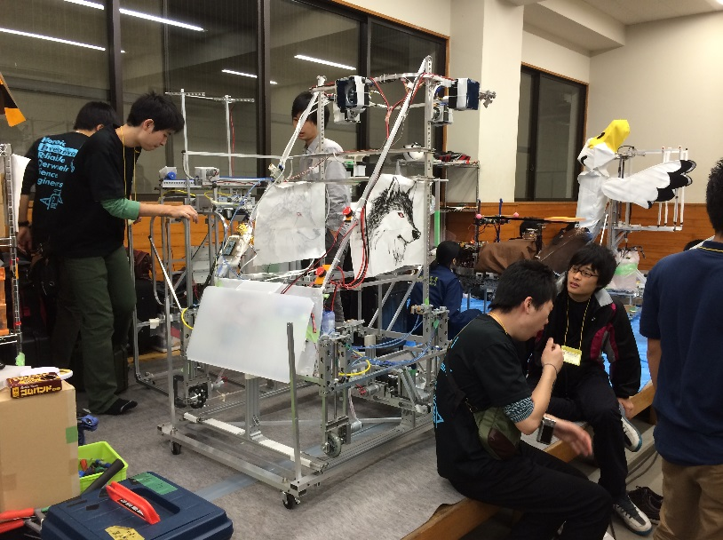

マシン名 Uni☆Verse

2014年度の競技テーマは「出前迅速」、ロボットが蕎麦の出前を行う競技である。
出前ロボットはできるだけ多くの蒸篭を積み、３つの障害物（スラローム・角材・傾斜）を越えて
出前先の机の上に運ぶ。これを繰り返し、時間内により多くの蒸篭を出前したチームが勝利となる。
今回私たちが製作したロボットはの名前は「Uni☆Verse」。このマシンの最大の特徴は、最大2kgwの推力
を出す強力なダクテッドファンを4つ用いた蒸篭の制御である。これは蒸篭の揺れをセンサーで感知し、倒れた
方向に応じて4つのファンの推力を制御し、蒸篭を安定させるというものである。ファンから出る大きな
音と、傾斜ゾーンで蒸篭が15度傾いたまま走行するという異様な光景により、会場の皆さんに驚きと感動をお届けした。
地区大会では一回戦判定負けとなったが、直後行われたデモで傾斜ゾーンの乗り越えに成功し、
アイデア賞・出前迅速賞・東京エレクトロンFE特別賞を頂き、さらに全国大会出場を果たした。
全国大会では、舞鶴高専との一回戦では傾斜ゾーンで失敗するも判定で勝利し、2回戦の香川高専詫間キャン
パスとの対戦では机に蒸篭を置く直前で惜しくもタイムアップとなり敗退したが、独創的なアイディアが評価
され、アイデア倒れ賞・田中貴金属特別賞を頂いた。大会を通して一度も出前を成功させることができなかったのが残念である。
蒸篭の制御にはラジコン用のダクテッドファンとレーザ変位センサを使用している。制御手法としてはPID制御
を使用した。傾斜ゾーンにおいてI制御が必要となるのだが、応答速度が悪いため、制御はできていたもののあま
り速く走行することができなかった。また、ファン自体のレスポンスが遅いためD制御が必須である。
レーザ距離計は、蒸篭が大きく傾いてもレーザが常に当たるようファンよりも低い位置に取り付けている。
ファンは高い位置につけなければならないのだが、マシンの重心が高くなるため、走行性に難があり、
転倒のリスクも高くなった。また、マシンのサイズ制限によりファンを高い位置に置くことができないため、
積める蒸篭の枚数は限られる。大会では20段の蒸篭を運んだ。
なお、ファンは超高速回転する危険な機構であるため、回転部の保護を絶対に怠ってはならない。